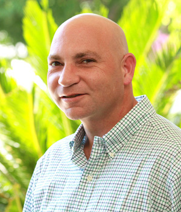

“I like Dr. Lee’s competent, well credentialed and caring attitude, and the well trained staff. They are friendly, capable and efficient.
“As for the treatment, the concept of a permanent implant vs. other alternatives made the decision easy. Dr. Lee is the consummate professional. Great ‘chair-side’ manners, thorough explanations, patient and not rushed. Not to mention outstanding skill.
“I’ve rarely seen such high attention to detail in a medical practice, from the important things, such as on-time appointments and proper equipment, right down to the little things you notice such as the silver ink used on the appointment cards. I always feel welcome and at home with the well-attired and efficient staff.
“It was indeed a long process, about 10 months from start to finish, but given the outstanding results of my new, clean, healthy and strong teeth, I would not have it any other way.”
—Robert R.
“I was unable to bite with half my mouth after letting a root canal decay. I was recommended to go to Dr. Lee at the Orange County Dental Implant Center by my father, who is a general dentist.
“The first time I walked into Dr. Lee’s office I was immediately impressed by the spa-like ambience of the office, the warm and hospitable staff and the level of care pre- and post-surgery.
“Dr. Lee was always comprehensive about his explanation of the treatment and he always eased the hesitations I had by answering all of my questions thoroughly. Dr. Lee is very knowledgeable, personable and very meticulous, his treatment is also very gentle.
“After the treatment, the staff followed up with me every week to ensure I was healing in the proper way. My overall experience has been immaculate and I’ve become a lifelong patient.”
—Keeley H.
“As a result of Dr. Lee’s experience, I no longer have to
worry about saving my teeth and, more importantly, he is
saving my life.”
“When I started with Dr. Lee I was recovering from radiation therapy on my jaw. As a result of the radiation, my teeth were decaying and breaking on a weekly basis.
“Dr. Lee was recommended to me and he immediately began working on my treatment plan. He communicated with my oncologist, my normal dentist and even another oral surgeon that specializes in cancer. He must have put in 50 to 100 hours before I even paid any money, just to get a treatment plan.
“After the substantial radiation to my face there was no easy solution to fix my teeth. After even more research, Dr. Lee decided he had the solution. Extractions and implants were a must, but in order to get the implants done he had to strengthen my jawbone. He put me on two months, two hours a day in an oxygen chamber to make sure the bone was fully ready. He has since completed the extractions and has begun the implants. Every bit of the treatment has been painless.
“His precision and professional skills make Dr. Lee not only the best doctor, but for me, the only doctor. His skills and expertise are like no other. Not only would I come to Dr. Lee again, I would recommend him to every person I know.
“Not only has he changed the visual appearance of my teeth, he has also changed my life.”
—Mike S.
“My tooth cracked on something I ate and split in half. My dentist recommended Orange County Dental Implant Center for an implant.
“Dr. Lee and his staff were wonderful. I’m the type of person that is typically anxious when going to the dentist but my entire experience has been pleasant.
“Dr. Lee’s experience was evident from the first consultation. From that point on, I was sure I was at the right place. He has a calm demeanor and is very professional and thorough.
“I am adverse to pain and the thought of coming in was scary but Dr. Lee answered all my questions and once I was here I felt very comfortable. I got one tooth replaced with an implant and just needed local anesthesia and could drive home.
“Everyone was very helpful and friendly and the office environment was clean and inviting.
“I’ve had no problems or issues with the procedure. I’ve been extremely pleased with my smile and more confident as a result!”
— Kathleen K.
“I love the services of Dr. Jeffrey Lee. Dr. He was highly recommended by my dentist, but I didn’t believe that he was the greatest because I had just recently received very bad services from another dentist so it was kind of hard for me to trust someone by just a recommendation. But actually, I was wrong, I found someone out there that didn’t only care about the money, I found someone who cares for the well-being of the patients. I discovered a very honest doctor, with high professionalism and with a very high work ethic.
“His experience is priceless, it only comes from years of practice. The friendliness of his staff is unrated. The atmosphere of the office made me feel like I was at home. Dr. Lee and his staff were the same, very friendly and courteous.
“Making an appointment was never a problem, they always had appointments available that best fitted my busy schedule. From the first time I called to make an appointment, to the final part of the implant process, Dr. Jeffrey Lee and his staff were very friendly, I am very satisfied with the end result. I just got my permanent tooth, it looks beautiful.
“Thanks a lot Dr. Jeffrey Lee and staff. I love you.”
—J.H.
“I saw Dr. Jeffrey Lee for an implant placement which turned out to be a very smooth experience—the staff were very friendly and took great care to ensure that I understood what I needed to do for the procedure and what exactly was going to be performed. During the procedure Dr. Lee remained in good communication with me. There was no pain nor any discomfort at all. There was excellent follow-up too, something which I have found to be sadly lacking with other healthcare practitioners. I would recommend Dr. Lee to anyone.”
—Satisfied Patient
“My reception at the front desk was warm and personable. The procedure was explained very well to me and the people here are all very helpful and friendly. You guys are doing a very good job. Thank you.”
-C.H.
“Dr. Lee as well as the staff are very knowledgeable in their field. They are courteous and welcoming whenever I come in.”
-C.H.
“Extremely clean, neat and staff was very helpful and nice. I was very nervous but in the end everything was great.”
-K.R.
“The staff are extremely helpful and are very prompt with scheduling and addressing patients.”
-S.F.
“Easy to get appointments for consultation and procedures.”
-A.V.
“Very smooth, easy, no hassle.”
-M.L.
“The staff was friendly and caring and took me in without an appointment when I was hurting.”
-A.A.
“It’s a very professional office and they have very helpful and kind staff. Had all my questions answered thoroughly and my entire process has been great overall.”
-A.M.
“Professional environment and friendly staff.”
-M.C.
“Very professional.”
-B.H.
“Professional staff, brilliant surgeon and nice, new office.”
-B.Q.
“Every time I visit the office, the Dr. and staff are always friendly, professional and attentive.”
-K.H.
“Very good doctor, nurses. Very nice staff.”
-M.Z.
“Great staff.”
-C.H.
“Great facility and friendly staff.”
-H.S.
“Clean, friendly, professional.”
-B.T.
“Very clean and professional.”
-J.K.
“Very professional – great doctor and staff.”
-C.C.
“Doctor and staff are very nice and professional.”
-M.B.
“It is a great office and the doctor and staff are great.”
-W.C.
“Excellent, professional staff.”
-S.S.
“Very professional and caring.”
-T.L.
“Prompt and friendly service.”
– R.B.
“Great service, great people, whatever question you have will get answered.”
-D.P.
“The staff is very efficient and genuine.”
-C.T.
“Staff was very helpful and kind.”
-A.N.
“Dr. Lee and his staff are honest and wonderful.”
-A.B.
“Dr. Lee is very careful and considerate of the patients and the staff is very friendly.”
-C.C.
“The doctor is very nice and genuinely cares about patient’s health.”
-J.J.
“The staff and doctor are very nice and make you feel calm and comfortable and safe while you’re here.”
-M.S.
“Friendly staff, made me very comfortable.”
-C.W.
“Extremely professional, caring, lovely décor, very competent staff.”
-S.B.
“Staff is very, very friendly and kind. Office is very comfortable.”
-Anonymous
“Everything was explained clearly and professionally. Great staff also!”
-T.H.
“Everyone was very friendly and helpful and the doctor was especially informative!”
-J.M.
“Both the doctor and his staff were very professional and friendly. The consultation was precise and all my questions were answered.”
-M.B.
“Everyone was very kind and gave great information.”
-S.R.
“I had a great experience at this office and continue to have a great one. The staff is helpful and is always able to answer questions I may have.”
-R.N.
“I had a great experience. The staff made the whole process very straightforward.”
-E.C.
“Staff is great. Couldn’t ask for more nice or comforting. Doctor completely informed me of whole situation.”
-C.C.
“The staff was very attentive and sympathetic to my needs and Dr. Lee was very educative.”
-L.F.
“Dr. Lee is clear, concise and thorough. The office staff is friendly and patient. Everything you would hope for.”
-J.R.
“Dr. Lee is very honest about the treatment. He also provides a very detailed explanation. The office also has great music!”
-Y.T.
“Dr. Lee is excellent in communicating with you. Explains in ‘plain’ English what is going on. Cares for the patient first.”
-E.R.
“Dr. is accommodating to patient needs and schedule.”
-H.K.
“Dr. Lee and staff are very helpful with any questions you have. They know how to put you at ease.”
-K.D.
“The office is charming and the staff is caring and attentive to the patients’ needs.”
-L.H.
“I was impressed with the level of knowledge and expertise, everything fully explained and warm and friendly staff.”
-H.M.
“It was nice. The doctor and the assistants were friendly and the doctor explained the procedure very well.”
-C.A.
“They took the time with me so I understood everything.”
-D.C.
“I had a lot of anxiety about the procedure but it went very well. Dr. Lee explained all the options and what the benefits of each course of treatment were.”
-K.M
“Professional, thorough explanation of procedure, felt very comfortable.”
-K.R.
“You are all doing a fantastic job. Thanks! All of the staff were very friendly and helpful with any questions I had.”
-J.S.
“Nice office, great front desk, good experience.”
-A.J.
“I was really taken care of and feel safe. They made me feel very comfortable and explain[ed] to me clearly. Thanks for making a scary experience a good one…keep it up!”
-M.P.
“It all went well, every question was answered. They know how to make me feel at ease and comfortable. Everybody is friendly. Keep it up!”
-M.R.
“Coming in for this procedure was stressful enough and your staff and doctor were amazing. Keep up the great work.”
-E.W.
“It was great! I went in knowing possible risks and came out happy with the results!”
-K.T.
“It was the best. The doctor was wonderful!”
-A.R.
“The doctor is very nice, great bedside manner.”
-A.A.
“This is the best place to come with dental problems such as mine – from every respect especially Dr. Lee.”
-H.G.
“Dr. Lee is a true professional – Great job.”
-E.T.
“Quick, easy and helpful. Everyone was friendly and welcoming. It was done with very little pain.”
-A.V.
“Went better than I anticipated. Sedation was the most gentle I ever had.”
-C.D.
“Dr. Lee made me feel very comfortable and eased any of my nervousness.”
-D.V.
“It was fast and painless. Everyone was nice.”
-M.M.
“My experience was great. Everything healed really fast. No swelling, minimal pain and full doses of the pain medication was not necessary. Everything seems to be healing very well. Thank you!”
-J.G.
“Dr. Lee’s office is very professional and offers very good service. All the staff are very professional and make you feel right at home. I was terrified of surgery because I had my appendix removed when I was 5 years old, but my procedure was very fast and almost painless. Even the IV stick was great. I would recommend Dr. Lee’s office to anyone needing oral surgery.”
-N.S.
“Terrific experience. I had no pain and my recovery was very fast.”
-A.N.
“Highly recommended. I’m very sensitive to pain and couldn’t have asked for a better experience.”
-P.K.
“It was extremely easy and the staff were very accommodating.”
-J.N.
“The staff and service performed were exceptional.”
-T.L.
“The staff is very professional and very helpful. Surgery went smoothly and the doctor’s performance was outstanding.”
-L.M.
“The office staff is excellent and Dr. Lee is a success story in himself, along with excellent aids.”
-A.P.
“One of the best, if not…the best dentist!!!”
-J.M.
“Dr. Lee’s office is fantastic. You feel at home. The staff is extremely helpful and personable. This was the best dental experience I’ve ever had! Thank you so much!”
-P.N.
“It was good and I feel better about my teeth.”
-M.S.
“Dear Dr. Lee and Staff,
Just a short note to say THANK YOU for caring for me last Friday evening. You stayed after hours just for me and you didn’t know me. I’ll be sure to tell Dr. Zimmer and Dr. Hong about how wonderful you are, and to a complete stranger. You’re the Best.”
-D.M.
“Dr. Lee and his team are a great team to be under.”
-A.M.
“Nice people, good communication. Excellent experience.”
-J.G.
“Everything from good to exceptional. Thank you.”
-Alfredo
“Your professionalism and kindness were very much appreciated. Thank you Dr. Lee and staff.”
-J.M.
“I’m super grateful for you Dr. Lee and your staff. Thank you!!!”
-R.B.
“Everyone was very sweet and helpful. A wonderful experience.”
-A.R.
“I think it was the best choosing Dr. Lee for my surgery.”
-S.G.
“It was a very quick, easy and painless experience.”
-A.B.
“I have heard many horror stories which left me unsettled. My experience was great and I was proved otherwise. I would definitely recommend Dr. Lee to my friends and family.”
-S.K.
“Great, you don’t feel anything. In good care.”
-K.E.
“Very professional and caring.”
-B.D.
“Staff is great, friendly and easy to talk to. Been a fantastic experience!”
-A.E.
“Any dental issue is intense but trust in the doctor is the way to smooth it.”
-M.C.
“Very accommodating, considerate and thorough.”
-A.P.
“This office is very professional and well caring to their patients.”
-E.G.
“Very good, efficient, fast, friendly, professional.”
-S.Z.
“You guys are professional, friendly and polite.”
-P.C.
“Knowledgeable and very nice staff. Dr. Lee is marvelous. Couldn’t ask for a better experience considering what I needed.”
-J.S.
“It was fast and painless. Everyone was nice.”
-M.M.
“The doctor is very nice and genuinely cares about patient’s health.”
-J.J.
“Very helpful and fast recovery.”
-C.K.
“The procedure is a lot less painful than people usually make it out to be, at least, with Dr. Lee.”
-A.T.
“Very professional staff – excellent services.”
-T.T.
“It was a very good experience overall.”
-C.J.
“Love Love Love it!”
-D.F.
“Very professional, informative and efficient.”
-N.A.
“Dr. Lee is straight to the point no nonsense (I like that!). Staff is awesome and always cheerful when you may not be.”
-B.H.
“Very professional. Recovery was better than I thought it would be.”
-K.P.
“The office staff and Dr. Lee are all very sweet! I was not worried at all about having my dental work done here. It was a wonderful overall experience. I would recommend Dr. Lee to anyone!”
-J.A.
“I have had the most efficient surgical procedure of my life, so far.”
-P.M.
“Good service and kind people.”
-A.G.
“You do quality work.”
-Anonymous
“It doesn’t hurt.”
-E.S.
“You know you are in good hands from the front desk, the surgery room and the wheel chair ride out!”
-T.G.
“Very helpful and pain free for me. One of my best experiences with dental procedures.”
-E.C.
“My experience in the office was wonderful. The nurses, staff and doctor were amazing and sweet to me.”
-B.S.
“Very professional and efficient.”
-E.E.
“It was a quick and painless experience.”
-J.Z.
“The healing process was well worth it.”
-M.M.
“The surgical procedure and post-operation experience was relatively effective and efficient; quick and painless.”
-P.M.
“Dr. Lee and the staff helped make an unpleasant experience just as comfortable as possible.”
-Anonymous
“Everyone was really nice and I enjoyed this office and would recommend to everyone.”
-T.S.
“Service is good. Patient is taken good care of.”
-H.N.
“Great experience. Staffs are friendly and no pain after surgery.”
-M.S.
“Completely satisfied.”
-B.D.
“At a stressful time they make you relax and that is appreciated.”
-C.B.
“I would highly recommend Dr. Lee and the office to anybody that needs dental surgery.”
-N.C.
“It is a neat and cool environment to have dental procedures done. And it fully satisfies my expectations.”
-S.V.
“I really was happy with the experience. Dr. Lee and staff did a great job.”
-J.W.
“The staff is very friendly and the procedure was quick and easy.”
-D.C.
“The staff and doctor are friendly and take good care of you.”
-G.U.
“Great experience with great smiles.”
-M.D.
“It did not hurt at all.”
-P.C.
“Everyone treats you so nice. He did a wonderful job.”
-D.A.
“A nice, easy, friendly office. I came in as an emergency patient and was so thankful for such good treatment.”
-J.R.
“I had a great surgery with a quick recovery. Dr. Lee and his office are all very considerate and kind people. It was especially interesting to hear about Dr. Lee’s gray African parrot. I now would love to own one. I hope you will all have a great rest of the year.
-L.R.
“Being that this is my first dental surgery I have had, there are no regrets in having had done it here at Jeffrey Lee’s. I am very pleased and astonished by the professionalism of the staff and dentist. More than anything, knowing that I saved some money that originally I was going to pay. But because of the constant care and looking-out-for of the receptionist, I was able to save a couple hundred dollars. Thanks.”
-O.A.
“Keep doing what you’re doing. Service was great! Very pleased.”
– B.D.
“Great experience. Will recommend to everyone.”
-R.Q.
“This was a very good experience. They were very comprehensive in their explanation of the treatment.”
-M.P.
“Better than most visits. I had a bad experience at the dentist as a child. More comfortable here.”
-D.T.
“My experience was very good. Everyone is very helpful.”
-K.R.
“Great job. Great staff.”
-G.R.
“Pain was gone after 3 to 4 days. Never needed more than Ibprofun for pain.”
-A.B.
“Very clean, excellent service from everyone.”
-C.M.
“Dr. Jeffrey Lee did a wonderful job.”
-T.N.
“It was very comfortable given the uncomfortable situation.”
-J.W.
“Quick and easy.”
-M.C.
“My experience was great. I really enjoy coming here…Thanks for everything!!!”
-M.M.
“Wish I had done this a long time ago.”
-T.B.
“Great, you don’t feel anything. In good care.”
-K.E.
“I love the service provided in this location.”
-M.A.
“Don’t remember a thing about the surgery, simply having the IV put in then woke up at home, was very well done.”
-J.S.
“Dr. Lee is the best surgeon. I am so lucky I came here. He is the best doctor in the world. So calm, nice and caring.”
-N.D.
“All staff members were very friendly and returned phone calls promptly.”
-K.B.
“Professional, courteous, pain free.”
-M.D.
“Efficient and accurate. Responding professionally and expediently.”
-T.M.
“From the front desk, the girl that deals with billing, the one that assists the doctor and the doctor, they were great/explain every step; and with the smile from the front desk to the back I felt comfortable and knowing I will be ok. By the way going to the dentist is not my favorite thing. Not this time. Thank you, thank you, thank you!”
-I.L.
“It was an overall good experience there isn’t really anything I didn’t like about it. The procedure was great and the staff was very friendly and helpful.”
-L.C.
“Very professional and personable. Great follow up.”
-W.G.
“I was really afraid at first but everyone made me feel comfortable and was really nice.”
-H.S.
“It went really well, and there is nothing to fear.”
-L.G.
“Our sincere appreciation to Dr. Lee and all his staff will definitely highly recommend to family and friends.”
-I.G.
“It is a calming place with excellent service. Great charisma!”
-E.R.
“Dr. Lee is an excellent oral surgeon.”
-S.V.
“I would recommend Dr. Lee to my family and friends, fantastic doctor.”
-P.S.
“Excellent in every way.”
-A.R.
“Painless.”
-Anonymous
“I will definitely recommend it to others in need of oral surgery.”
-Anonymous
“Dr. Jeffrey Lee does a great job. He’s honest and has lots of experience.”
-G.D.
“Very easy, painless! Loved Dr. Lee!!”
-V.C.
“The surgery went extremely quickly, I closed my eyes then opened them and it was over.”
-Anonymous
Doctor and nurses are informed/informative, environment is extremely comfortable, operation went smoothly. Much better than my last oral surgeon.”
-J.L.
“Dr. Lee did great work. Experienced, no pain, was very kind and considerate and called to check on me that evening. The staff has also been very kind and professional. Would highly recommend.”
-T.O.
“Very professional and expert treatment.”
-W.W.
“I would like other patients to know that they’re in good hands.”
-R.W.
“Friendly and caring service.”
-J.B.